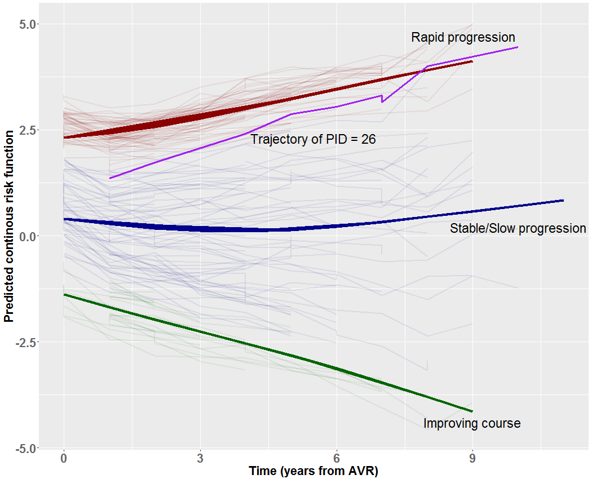

An AI - X-Reality framework
This is the AI component of Vira; a risk scoring engine that includes a data object model and a risk scoring function for predicting increase in left ventricular mass index (LVMI). LVMI is considered increased if LVMI >134 g/m2 in male patients and LVMI >110 g/m2 in female patients, thus values in this range for both sex was considered as the positive class. Vira employs a mixture of mixeffect gradiant boosting machine (MEmixgbm) to compute individualized patient trajectories and group specific trajectores. The figure below shows three trajectory groups identified by MEmixgbm: a rapid, a stable then slowly increasing, and a decreasing longitudinal profile of LVMI over time:
The Vira scoring function can be directly from the command line with curl:
curl https://localhost:5656/ocpu/apps/nguforche/Vira/R/predRiskScore/json \
-H "Content-Type: application/json" \
-d '{"input" : [ {"id":26,"age":63.6575,"sex":"Male","time":7.474,"acei":"Yes","dm":"No","creat":117,"hc":"Treated","prenyha":"III-IV","bsa":1.85},{"id":26,"age":63.6575,"sex":"Male","time":8.4712,"acei":"Yes","dm":"No","creat":117,"hc":"Treated","prenyha":"III-IV","bsa":1.85},{"id":26,"age":63.6575,"sex":"Male","time":9.5068,"acei":"Yes","dm":"No","creat":117,"hc":"Treated","prenyha":"III-IV","bsa":1.85} ]}'
The scoring function accepts both interative data as well as a batch CSV input file. The interactive prediction can be used only for the following set of featurs: age, sex, time, acei, dm, creat, hc, prenyha, bsa, and must include the patient id (PID) id and the follow up time for each patient must be at least larger than the maximum follow up time for the patient used for training. For batch prediction, the CSV file must contain all the features used for training. See for example test data).